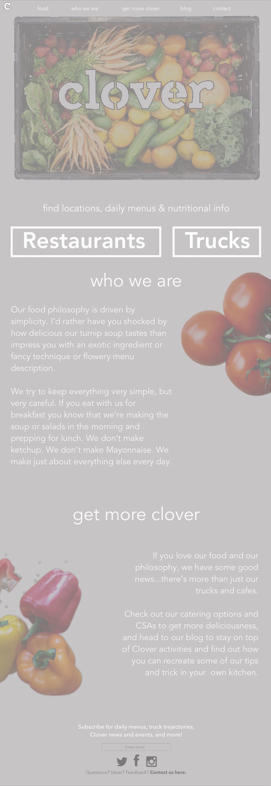

The problem: The vegetarian food truck and restaurant's website is unreflective of the tone and culture the company promotes in its in-person engagements, and needs a refresh to more effectively capture attention and align with current audience expectations.
The goal*: In a creative concept, re-envision the site's structure and content to be an accurate representation of the company’s desired branding, highlighting the value proposition of simple and nutritious local food, and targeting the audience of healthy, active city-dwellers.
*While recognizing there are many factors in play for the company that impact the site of which I'm unaware.
RESEARCH.
After diving into Clover's site (pictured), as well as researching sites for others operating in similar or related markets, I honed in on the need for a site that more clearly depicts the healthy ingredients Clover uses and the range of offerings the company provides, without some of the additional information currently taking up valuable real estate on Clover’s homepage. I also factored in feedback from user conversations, which addressed frustration with the cluttered nature of the page and the need for greater emphasis on Clover’s specific offerings.

WIREFRAMES.
Putting (erasable) pen to paper. This was an initial framework for how I envisioned a landing page developing: calling clear attention to Clover’s mission and highlighting locations and menus, with everything else as an added perk. This is a preliminary wireframe; the ultimate design developed further after iterating on earlier versions based on user feedback for optimal section ordering and additional content to include as subpages.
{kind=link}
DESIGN.
After putting concepts in front of additional users, editing some of the navigation and content based on their feedback, and settling on a direction, the low-fidelity UX mockup shown here demonstrates opportunities for the site’s enhancement and optimization. This re-design incorporates a lighter and brighter feel and tone, drawing in the Boston community with a landing page that truly reflects Clover’s vibrant personality and offerings.
VALIDATE & ITERATE.
Due to the fact that this project was a creative concept only, and not an assignment from the client, I was unable to officially implement any of these ideas or make any changes live on the site for testing. However, through user interviews discussing the new design elements, I was able to verify that these updates would be well received within the target audience. Additionally, if I did have the opportunity to launch any updates, I would monitor the results through key performance indicators specific to the priority goals: for example, to measure the user’s ability to locate different pages on the site, I would evaluate Google analytics for bounce rates and user flows to identify disconnects and drop-offs.
Keep testing. Find a way to the solution.